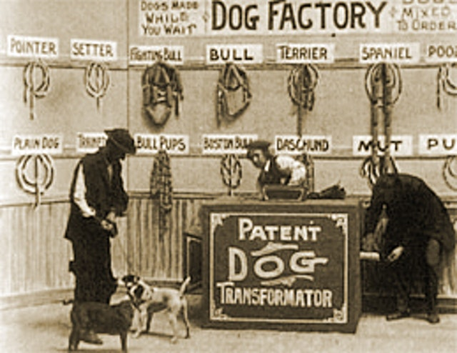

Le Voyage Dans la Lune (1902)
Le Voyage Dans la Lune (Trip to the Moon, in English) is perhaps Georges Méliès' most famous film, and is considered to be the first science fiction film in cinematic history.
Populares Na NETFLIX
